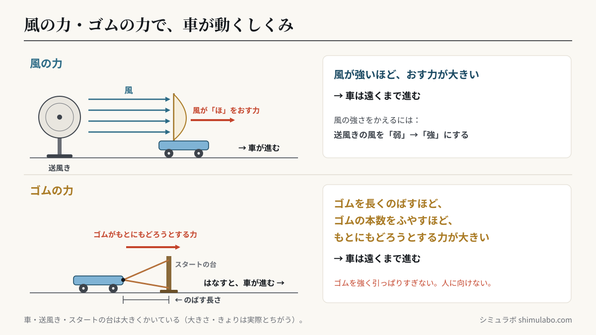
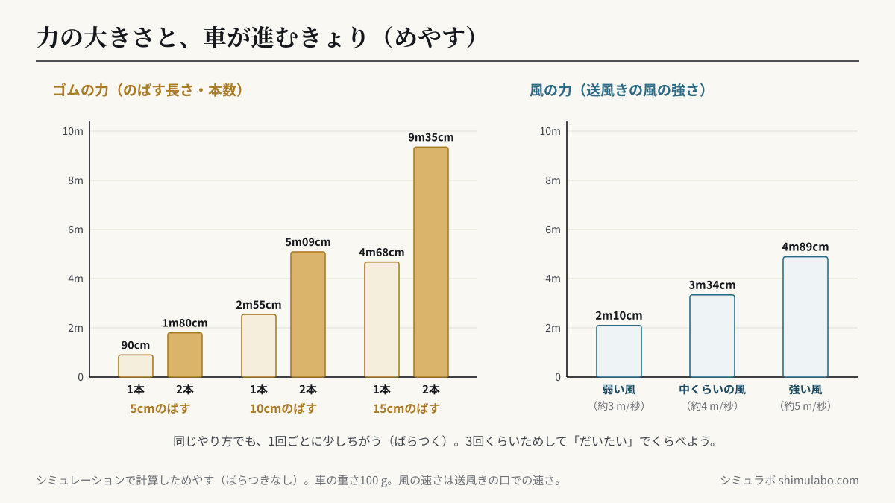

このシミュレーションでわかること
ポイント：風の力やゴムの力で、物を動かすことができます。風を強くするほど、またゴムを長くのばしたり本数をふやしたりするほど、力が大きくなり、車は遠くまで進みます。同じやり方で何回か走らせると、進んだきょりは少しずつちがう（ばらつく）ので、何回かの記ろくから「だいたいこのくらい」と考えます。
対応する単元：小学3年 A（2）風とゴムの力の働き「（ア）風の力は，物を動かすことができること。また，風の力の大きさを変えると，物が動く様子も変わること」「（イ）ゴムの力は，物を動かすことができること。また，ゴムの力の大きさを変えると，物が動く様子も変わること」（小学校学習指導要領解説 理科編 pp.32〜33）。解説では、風の強さやゴムの伸びと物の動きとの関係を表に整理すること、目的に合わせて風やゴムの力を調整することが示されています。
送風機の風の強さ（弱・中・強）や、ゴムをのばす長さ（1〜15cm）・ゴムの本数（1本・2本）をかえて車を走らせると、進んだきょりがメジャーの上に記ろくされ、下のぼうグラフに「●（1回ごと）」と「ぼう（だいたい）」でたまります。「🎯 ゴールゲーム」では、ゴールのはこの中に車を止めるために、ゴムの力をちょうせつします。
授業での使い方
- 導入：実際に風やゴムで動く車をつくって走らせたあと、「もっと遠くまで走らせるにはどうすればよいか」を話し合います。風を受けたときやゴムを引っぱったときの手ごたえと結びつけて予想させます。
- 展開：「3回ためす」で同じやり方を3回走らせ、記ろくがばらつくことを確かめます。そのうえで、ゴムをのばす長さを5cm・10cm・15cmにかえて、ぼうグラフでくらべます。風は「弱い風」と「強い風」でくらべます。実際の実験で教室や廊下がせまいときの、予想や確かめにも使えます。
- まとめ：「🎯 ゴールゲーム」で、ゴールのはこにぴったり止めるには何cmのばせばよいかを、それまでの記ろくから考えます。「目的に合わせて力の大きさをちょうせつする」活動になります。
児童への問いの例：
- ゴムをのばす長さを5cmから10cmにすると、車の進むきょりはどうなるでしょう。
- 同じやり方で3回走らせたのに、きょりが少しずつちがいました。どの記ろくを使えばよいでしょう。
- ゴールのはこが3mのところにあります。前の記ろくを見て、ゴムを何cmのばせばよいと思いますか。
しくみ・解説






図はタップすると大きく表示されます。授業のプリント・スライド・板書計画に自由に使えます（出典「シミュラボ」とページのURLを添えてください）。
ことばの意味
- 風の力とは、うごく空気（風）が物をおす力のことで、風が強いほど大きくなります。
- ゴムの力とは、のばしたりねじったりしたゴムが、もとの形にもどろうとする力のことです。
- 進んだきょりとは、スタートの線から車が止まった所までの長さのことです。
- だいたい（先生向け：平均）とは、何回かの記ろくをならしたときの、まん中あたりの長さのことです。
- ぼうグラフとは、数の大きさをぼうの長さで表したグラフで、くらべやすくなります。
進むきょり 早見表（このシミュレーションのめやす・ばらつきなし）
| ゴムの本数 | 5cmのばす | 10cmのばす | 15cmのばす |
|---|---|---|---|
| ゴム1本 | 90cm | 2m55cm | 4m68cm |
| ゴム2本 | 1m80cm | 5m09cm | 9m35cm |
| 送風機の風（口での風の速さ） | 進むきょり |
|---|---|
| 弱い風（約3 m/秒） | 2m10cm |
| 中くらいの風（約4 m/秒） | 3m34cm |
| 強い風（約5 m/秒） | 4m89cm |
実際には1回ごとに少しちがい、このシミュレーションでも同じやり方で、だいたい ±5〜10％ くらいばらつきます。ゴムは、のばす長さを2倍（5cm→10cm）にすると、きょりは約2.8倍になります。本数を2本にすると、きょりは約2倍になります。
「だいたい」の考え方
同じやり方でも、車の置き方や手のはなし方、ゆかのようすで、進むきょりは少しずつかわります。1回だけの記ろくで決めずに、3回くらい走らせて、「だいたいこのあたり」と考えます。ぼうグラフのぼうは、何回かの記ろくをならした長さ（平均）です。
先生向けの補足：本シミュレーションの「だいたい」は算術平均を10cm単位にまるめた値です。平均は算数の第5学年で学ぶため、3年生には「記ろくの点が集まっているあたり」「いちばん長い記ろくと短い記ろくのあいだ」ととらえさせると無理がありません。本単元は第5学年「振り子の運動」（条件をそろえて何回か測る）につながります。
このシミュレーションのしくみ（先生向け）
- 車：重さ100 g、帆20cm×20cm、ころがるときのまさつ係数0.04。
- ゴム：進むきょり＝0.9 m×本数×（のばす長さ÷5cm）1.5。ばねのように力がのびに比例するなら、きょりはのびの2乗に比例しますが、輪ゴムはのびが大きくなると力の増え方がゆるやかになるため、1.5乗としためやすです。
- 風：帆が受ける力＝½×空気の密度×抗力係数1.2×帆の面積×（風の速さ−車の速さ）2。送風機の風は、口から0.6 mまでは同じ速さで、それより先はきょりに反比例して弱まるとしています。風の力がまさつより小さくなると車は止まります。
- 1回ごとのばらつきは、ゴムは5％、風は風の速さ3％・まさつ5％の大きさの乱数で表しています。
- メジャーの上の車とスタートの台は、見やすいように大きくかいています（車の長さは約20cmのつもり）。
ゴムを強く引っぱりすぎると切れたり、手や顔に当たったりします。実際の実験では、ゴムをのばす長さを決めて、人のいる方に向けないようにします。
参考
- 文部科学省「小学校学習指導要領（平成29年告示）解説 理科編」第3学年 A（2）風とゴムの力の働き（pp.32〜33）、内容の取扱い（ものづくり p.38）（文部科学省 小学校学習指導要領解説のページ）
- 小学校理科（3年）の教科書の「風とゴムの力のはたらき」の単元
引用・転載について
本ページのシミュレーション結果・数値は、出典を明記いただければブログ・ニュース記事・SNS・授業や社内資料への引用を歓迎します。事前連絡は不要です。
推奨クレジット表記：
出典：シミュラボ「風とゴムの力の働きシミュレーター（車が進むきょりをくらべる）」 https://shimulabo.com/sims/kaze-gomu/よくある質問
- ゴムを長くのばすと、車の進み方はどうなりますか？
- ゴムを長くのばすほど、もとにもどろうとする力が大きくなり、車は遠くまで進みます。このシミュレーションでは、ゴム1本を5cmのばすと約90cm、10cmのばすと約2m55cm進みます。
- 風を強くすると、車の進み方はどうなりますか？
- 風が強いほど、帆をおす力が大きくなり、車は遠くまで進みます。このシミュレーションでは、弱い風で約2m10cm、強い風で約4m89cm進みます。
- ゴムの本数をふやすと、どうなりますか？
- ゴムの力が大きくなり、車は遠くまで進みます。同じ長さだけのばすなら、2本にすると1本のときの約2倍進みます。
- 同じやり方なのに、進んだきょりが毎回ちがうのはなぜですか？
- 車の置き方や手のはなし方、ゆかのようすなどが毎回少しずつちがうからです。1回だけで決めずに、3回くらいためして「だいたいこのくらい」と考えます。
- ゴムを使う実験で気をつけることは？
- ゴムを強く引っぱりすぎると切れたり、手や顔に当たったりします。のばす長さを決めて、人のいる方に向けないようにしましょう。